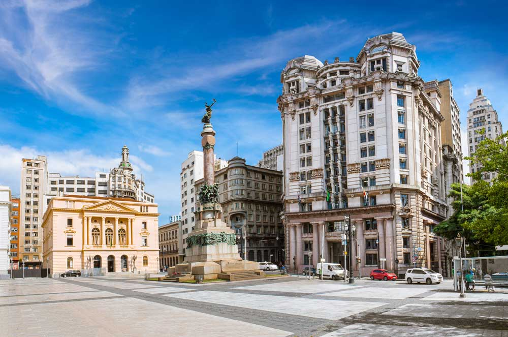
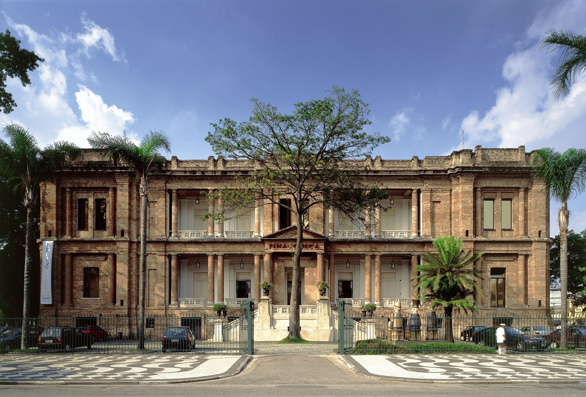
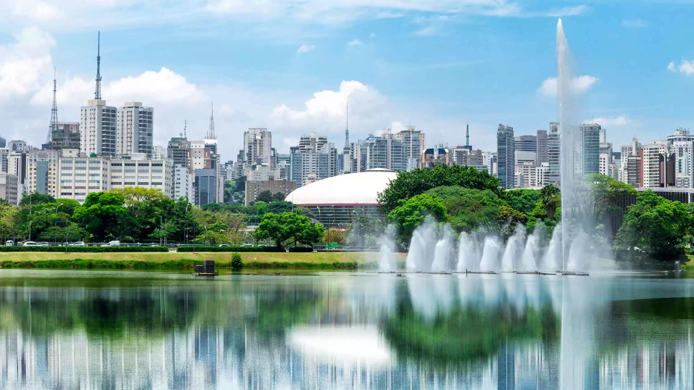
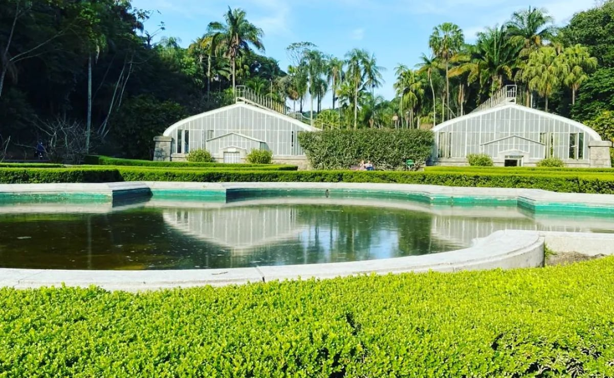
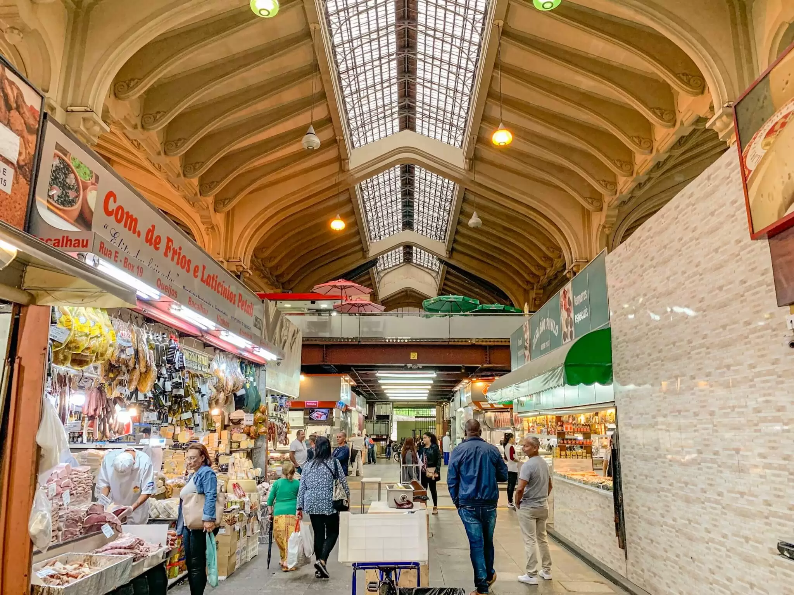
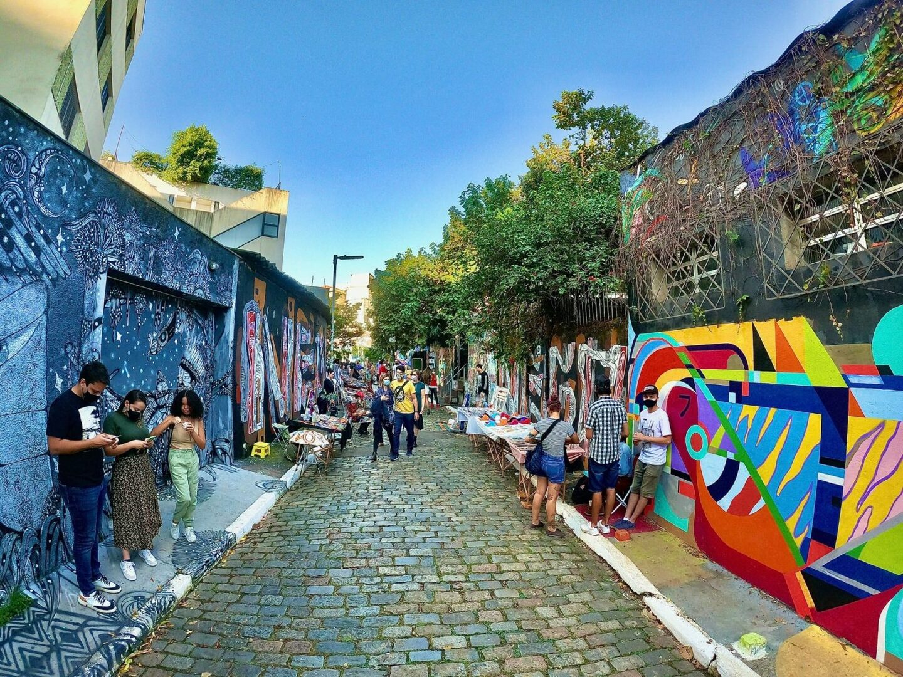
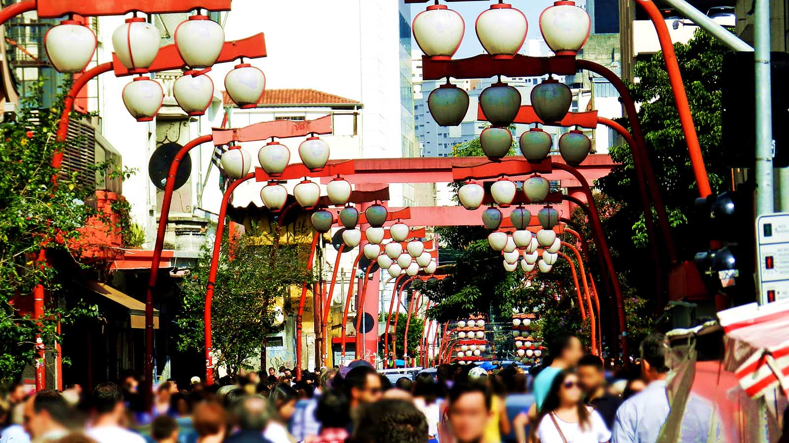

São Paulo
São Paulo é uma das cidades que mais se destacam no ranking de cidades inteligentes de São Paulo. Combinando
tradição e inovação, o município apresenta avanços em áreas como mobilidade, educação, economia e qualidade de
vida. Sua história, cultura e desenvolvimento a tornam referência no cenário estadual e nacional.
A cidade cresceu ao longo das últimas décadas, integrando tecnologia às políticas públicas e à gestão urbana. O
equilíbrio entre crescimento econômico e preservação cultural também é uma marca registrada de São Paulo.
Nos últimos anos, o município tem atraído novos investimentos e se destacado pela qualidade de seus serviços
públicos, o que reflete em melhores índices de bem-estar para seus habitantes.
Pontos Turísticos
Entre os principais pontos turísticos de São Paulo, encontram-se parques, museus e centros culturais. Esses
espaços atraem visitantes pela sua beleza e importância histórica, tornando-se locais ideais para lazer e
turismo.
Veja alguns dos principais pontos turísticos da cidade:
Cultura e História
-
 Avenida Paulista: O coração financeiro e cultural da cidade. Aos domingos e feriados, a
avenida é fechada para carros, se tornando um grande espaço de lazer. Aqui você encontra o MASP (Museu de
Arte de São Paulo), um dos museus mais importantes da América Latina, e a Japan House, um centro cultural
dedicado à cultura japonesa.
Avenida Paulista: O coração financeiro e cultural da cidade. Aos domingos e feriados, a
avenida é fechada para carros, se tornando um grande espaço de lazer. Aqui você encontra o MASP (Museu de
Arte de São Paulo), um dos museus mais importantes da América Latina, e a Japan House, um centro cultural
dedicado à cultura japonesa.
-

Centro Histórico: Uma caminhada por essa área revela a história da cidade. Não deixe de
visitar o Theatro Municipal, uma joia arquitetônica, e o Pátio do Colégio, local de fundação de São Paulo. A
Catedral da Sé, com sua arquitetura gótica imponente, também é parada obrigatória.
-

Pinacoteca de São Paulo: Localizada em um belo edifício do século XIX, a Pinacoteca abriga
um dos mais importantes acervos de arte brasileira. A estação de metrô mais próxima é a Luz.
Lazer e Natureza
-

Parque Ibirapuera: O "pulmão verde" da cidade. É perfeito para relaxar, praticar esportes,
fazer um piquenique ou visitar os museus e pavilhões que ficam dentro dele, como o Museu Afro Brasil e o
Pavilhão da Bienal.
-

Parque do Estado (Jardim Botânico): Um lugar para se conectar com a natureza, com trilhas,
lagos e uma estufa de vidro impressionante. É um refúgio de tranquilidade na cidade.
Gastronomia e Compras
-

Mercado Municipal de São Paulo: Mais conhecido como "Mercadão", é um paraíso para os
amantes da culinária. Não saia de lá sem provar o famoso sanduíche de mortadela e o pastel de bacalhau.
-

Vila Madalena: Conhecido por suas ruas charmosas e grafites vibrantes, como no Beco do
Batman. A região é um polo de bares, restaurantes e ateliês de artistas.
-

Liberdade: O maior reduto da cultura japonesa fora do Japão. É o lugar perfeito para
experimentar a culinária oriental, comprar produtos típicos e mergulhar em um ambiente diferente.
Gastronomia
A gastronomia de São Paulo é um reflexo fiel da sua história e da sua diversidade cultural. A cidade não tem
apenas "uma" culinária, mas sim um universo de sabores que se misturam, vindos de diversas partes do Brasil e do
mundo.
Aqui estão os principais pontos para entender a gastronomia paulistana:
Diversidade e Influências
São Paulo é conhecida como a "capital da gastronomia" por sua incrível variedade. As influências de imigrantes
são a marca registrada da cidade.
- Italiana: Fortemente presente em bairros como o Bixiga e o Brás, a culinária italiana é um pilar.
Você encontra as melhores cantinas, pizzarias e "rotisserias" (locais que vendem massas frescas e pratos
prontos), além de delícias como o polpetone.
- Japonesa: A Liberdade é o centro da comunidade japonesa, e a culinária oriental se espalhou por toda
a cidade. São Paulo tem a maior concentração de restaurantes japoneses fora do Japão, com opções que vão
desde o tradicional sushi e sashimi até o popular lámen.
Pratos e Lanches Clássicos
Apesar da grande diversidade, São Paulo também tem seus próprios pratos e lanches icônicos, muitos deles
presentes no dia a dia do paulistano.
- Virado à Paulista: Considerado o prato mais emblemático do estado, é servido tradicionalmente às
segundas-feiras. É uma refeição completa, com arroz, tutu de feijão, bisteca de porco, couve refogada, ovo
frito e banana à milanesa.
- Sanduíche de Mortadela: Uma verdadeira lenda do Mercado Municipal. A versão original é uma montanha
de fatias de mortadela, muitas vezes com queijo. É uma experiência imperdível.
- Bauru: Criado na cidade, é um sanduíche com rosbife, queijo derretido, tomate e pepino em conserva no
pão francês, sem miolo.
- Cuscuz à Paulista: Diferente da versão nordestina, o cuscuz de São Paulo é feito com farinha de
milho, cozido no vapor e recheado com peixe (como sardinha) ou frango, ovos e legumes.
- Pastel de Feira: Uma instituição. Crocante e recheado, é uma parada obrigatória nas feiras livres da
cidade.
A Gastronomia de Rua
A culinária de São Paulo também se manifesta nas ruas e padarias, com opções rápidas e saborosas:
- Pão na Chapa: Clássico de café da manhã em qualquer padaria.
- Sanduíche de Pernil: Típico de lanchonetes tradicionais, como o Bar do Estadão, é um lanche suculento
e cheio de sabor.
- Coxinha: Embora seja popular em todo o Brasil, a coxinha em São Paulo é uma paixão, encontrada em
todos os lugares, de bares a lanchonetes especializadas.
- Cachorro-quente com Purê de Batata: Uma curiosidade paulistana que adiciona uma camada cremosa ao
lanche.
Economia
A economia de São Paulo é a mais forte e diversificada do Brasil, e uma das mais importantes da América Latina. A
cidade é o principal centro financeiro, corporativo e mercantil do país, funcionando como a "locomotiva do
Brasil".
O Coração Financeiro do Brasil
São Paulo concentra a sede de grandes empresas nacionais e multinacionais, além de ser o lar da B3 (Brasil,
Bolsa, Balcão), a principal bolsa de valores do Brasil e uma das maiores do mundo. O setor de serviços é o motor
da economia da cidade, dominando o PIB (Produto Interno Bruto) e empregando a maior parte da população. Esse
setor inclui finanças, tecnologia da informação, telecomunicações, publicidade e serviços profissionais.
Principais Setores e Indústrias
Embora o setor de serviços seja o mais representativo, a economia paulistana é bastante diversificada e inclui
outros setores de grande relevância:
- Tecnologia e Inovação:A cidade é um polo de tecnologia e startups, atraindo investimentos e talentos.
É o maior centro de tecnologia da informação e comunicação (TIC) do Brasil.
- Indústria: Por muito tempo, a indústria foi a principal atividade econômica de São Paulo. Embora
tenha perdido parte de sua participação relativa para o setor de serviços, a cidade ainda possui um
importante parque industrial, com destaque para a produção de veículos, autopeças, e indústrias de alta
tecnologia.
- Comércio e Turismo:O comércio em São Paulo é robusto e diversificado, com shoppings, feiras livres,
mercados e lojas de rua. O turismo corporativo é um grande motor, com a cidade sediando grandes feiras,
congressos e eventos globais que movimentam toda a cadeia de serviços, como hotéis, restaurantes e
transportes.
A Relevância Global
Para se ter uma ideia da dimensão econômica de São Paulo, o seu PIB municipal é o maior do país e, se a
cidade fosse uma nação, sua economia estaria entre as 50 maiores do mundo. Essa força econômica é
impulsionada não apenas por sua infraestrutura e diversidade, mas também por uma mão de obra altamente
qualificada.
Em resumo, a economia de São Paulo é um ecossistema complexo e dinâmico, que impulsiona o desenvolvimento de
todo o país e se consolida cada vez mais como um centro de negócios global.
Curiosidades
São Paulo é uma metrópole vibrante, conhecida por sua diversidade cultural, economia pujante e influência nacional e internacional. A cidade possui muitas características que a tornam única e fascinante.
Diversidade Cultural
São Paulo é uma das cidades mais multiculturais do mundo, abrigando imigrantes de várias partes do planeta. Essa diversidade se reflete na culinária, festas, idiomas e tradições que coexistem na cidade.
Aspectos Históricos
Fundada em 1554, São Paulo cresceu de uma pequena vila colonial para a maior cidade da América do Sul. Sua história é marcada por ciclos econômicos importantes, como o café, a industrialização e o setor financeiro.
- Avenida Paulista: Símbolo do poder econômico e cultural da cidade, a avenida é palco de manifestações culturais, políticas e grandes eventos.
- Centro Histórico: Abriga construções importantes, como o Theatro Municipal, a Catedral da Sé e o Pátio do Colégio, local de fundação da cidade.
Qualidade de Vida e Infraestrutura
São Paulo oferece uma vasta infraestrutura de serviços, cultura, lazer e transporte. É uma cidade que nunca para, com vida noturna intensa e uma infinidade de opções para seus moradores e visitantes.
Esportes e Lazer
A cidade é apaixonada por futebol, com grandes clubes como Corinthians, Palmeiras, São Paulo FC e Santos (na região metropolitana). Também conta com parques icônicos, como o Ibirapuera, e eventos esportivos de destaque mundial.
Essas curiosidades mostram como São Paulo é uma cidade dinâmica, plural e cheia de histórias, que atrai milhões de pessoas em busca de oportunidades e